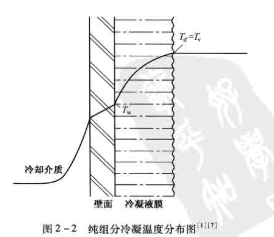
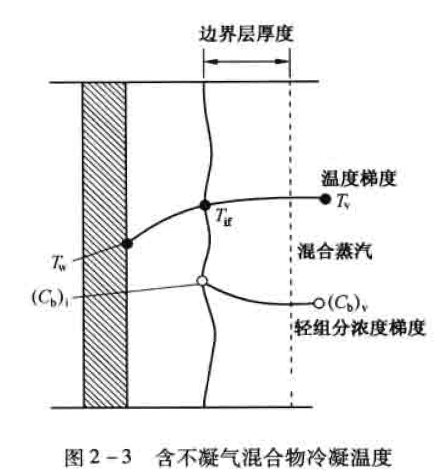

冷凝器
冷凝机理分析及设计考虑因素¶
冷凝机理分析¶
概述¶
当蒸汽与低于其饱和温度的壁面相接触时会冷凝成液体,同时放出汽化潜热并传递给壁面,这种热交换过程称为冷凝传热。
一般来说,单组分的冷凝传热是一种高效传热过程,它的传热系数高于同种流体的单相对流传热系数。但对于含不凝气的混合物冷凝,因不凝气的存在使冷凝传热系数大大降低。
两相流动传热的冷凝过程,应用十分广泛,如蒸馏塔顶汽体馏出物的冷凝、水蒸气的冷凝、冷冻剂蒸汽的冷凝等。
在冷凝过程中涉及到的主要设备有:管壳式冷凝器、空气冷却器、板式冷凝器和螺旋板式冷凝器等。
冷凝传热过程大致分为以下类型:
按冷凝面的基本几何参数,可分为管内冷凝和管外冷凝。管内冷凝包括水平管、垂直管和倾斜管;管外冷凝包括垂直单管及管東,水平单管及管束
按管子类型可分为光管、螺纹管(低翅片管)、沟槽管等
按蒸汽的流体动力学可分为:低速(重力控制)和高速(剪力控制)两种动力学状态。
按组分的数目和性质可分为:单组分、多组分混合物(冷凝液互溶和不互溶两种)、含不凝气的混合物
按冷凝方式可分为:膜状冷凝、滴状冷凝、直接接触冷凝、均相流冷凝等。
- 均相流冷凝发生在有小颗粒存在的时候,由于出现不期望的雾化现象,在设计中不作为主要问题考虑。
- 直接接触冷凝需要将冷凝汽体和冷却介质混合,在加工工业中很少采用。
- 除上述两种情况外,在冷凝过程中通常会出现两种情况:
- 一种是冷凝液能很好地润湿壁面,在壁面上形成一层连续的液膜。冷凝过程只在液膜与蒸汽的分界面上进行,冷凝放出的汽化潜热必须穿过这层液膜才能传到冷却壁面上去,这种冷凝方式称为膜状冷凝。这时,液膜层就成为主要的传热阻力。
- 而另一种情况是冷凝液不能很好地润湿壁面,冷凝液在壁面上形成一个个小液珠,且不断发展长大。液珠长大之后,由于受重力的作用,会不断地携带着沿途的其它液珠沿壁面流下,使壁面重复液珠的形成和成长过程。冷凝放出的汽化潜热可直接传递给壁面,这种冷凝方式称为滴状冷凝。
滴状冷凝的传热速率比膜状冷凝高,可以达到几倍甚至十几倍。其原因是蒸汽与管壁直接接触,中间没有比管壁导热系数小很多的液膜存在;同时传热的推动力是燕汽温度与管壁温度之差,这比膜状冷凝时的汽液界面温度与管壁温度之差要大。尽管滴状冷凝的传热效果很好,但在操作上不稳定,而且它所需要的特殊材质的冷凝表面也很难完全满足，因此,工业应用仍很有限。
膜状冷凝的特点¶
1.纯组分与小温差介质的冷凝
对纯组分冷凝,汽相温度场是平坦的,换句话说,气体到达汽液界面时不存在传质阻力,界面温度等于汽相主体温度。
对纯组分冷凝,由于不存在汽相的传质阻力,且冷凝温差推动力是汽相主体温度与管壁温度之差,因此冷凝传热效率非常高,即冷凝传热系数非常高。对于小温差介质或窄馏分冷凝,尽管存在汽相传质阻力,但很小可忽略不计,近似当纯组分处理。

2.含不凝气混合物冷凝与大温差介质的冷凝
如果汽体中含不凝气,那么在汽相中就会产生额外的温降(T_V-T_{if}),大温差介质冷凝也会出现此现象。这个温差的产生,是由于必须有一个分压差去迫使蒸汽穿过不凝气到达汽液界面所致。

汽液界面处的蒸汽分压等于界面温度对应的饱和蒸汽压,在界面处蒸汽分压降低了,相应的饱和温度也降低了。可凝汽体混合物冷凝时也会产生类似的汽相温降。因此含不凝气冷凝的温差推动力是(T_{if}-T_w),而不是纯组分的(T_v-T_w)，在其他条件相同的情况下，其冷凝传热效率比春组分冷凝时低。
3.流态预测
水平管内的冷凝可划分为两个主要的流态:汽体剪力控制流动和重力控制流动。对于水平管束外的冷凝,同样可以划分为上述两个主要流态。
剪力控制流态,汽体和液体都沿着剪力方向流动;而重力控制流态,液体沿重力方向流动,并可能与汽相物流分离。
预测这两种流态是非常重要的,在冷凝传热计算方法中要用到。确定液体负荷量或相对液体体积量也很重要,在低液体负荷下,汽体总是连续相;在高液体负荷下,液体可能为连续相,此时会形成弹状流或者泡状流。液体负荷是均相液体体积分率的函数或者是Martinelli参数的函数。
确定冷凝过程的流态需要有一个判别参数,称其为流型参数。
4.过热与过冷现象
汽体进入冷凝器有时处于过热状态,即汽体温度高于其露点温度。
如果管壁温度低于汽体露点温度,称为湿壁状态。在这种情况下,传热系数按饱和汽体冷凝计算,平均温差(MTD)按露点温度计算,而不是过热汽体温度。
如果管壁温度高于汽体露点温度,称为干壁状态。蒸馏塔顶冷凝器很少见干壁状态,但对进料一流出物换热器则会发生。在这种情况下,近管壁处不会形成冷凝液膜,传热系数按单相气体显热传热计算,用气体的实际温度计算平均温差。
当过热段占较大比例时,可能先经历一段干壁传热,再过渡到湿壁传热。一般来说,只有当冷流体的出口温度比较接近热流体的露点温度,且过热段占较大比例时才可能出现干壁现象,事实上这种情况很少遇到。
在全凝器中通常期望出现一定程度的过冷。在冷凝液抽出体系中,过冷可以防止发生闪蒸。因为冷凝液用泵抽出时出现闪蒸会产生气阻现象,对泵的操作有影响。但并不推荐在冷凝器中设计大量的过冷,尤其是卧式冷凝器。主要有两个方面的原因:
其一是低液体速度使得传热系数非常小;
其二是几乎不可能准确预测真实的液位高度和平均温差,因此传热系数难以计算。
因为这些原因,从可靠性和经济性出发,通常采用一台单独的换热器来处理过冷负荷。
最近的修改: 2020-01-03